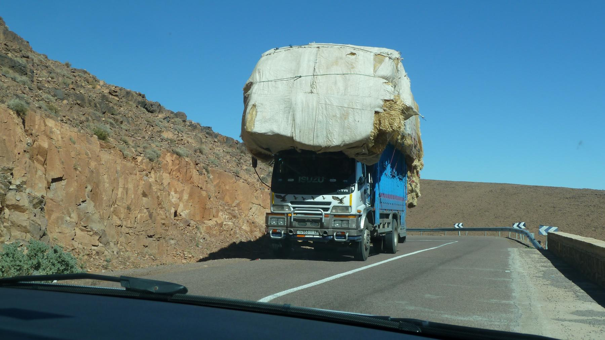
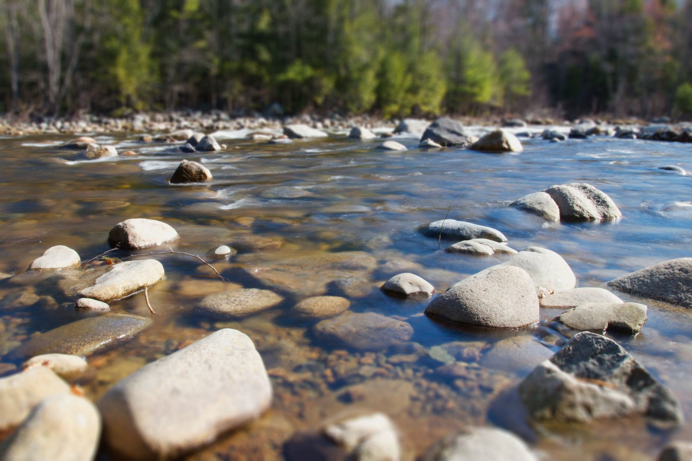
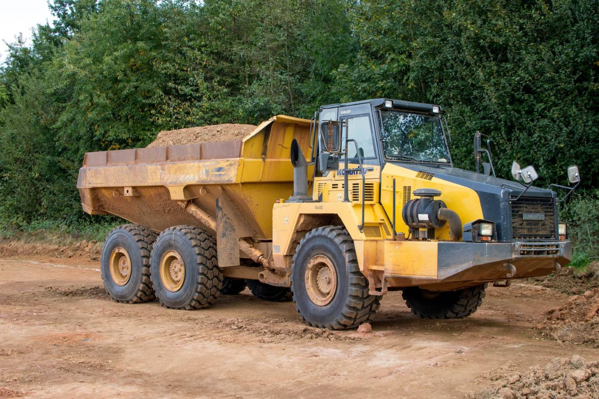
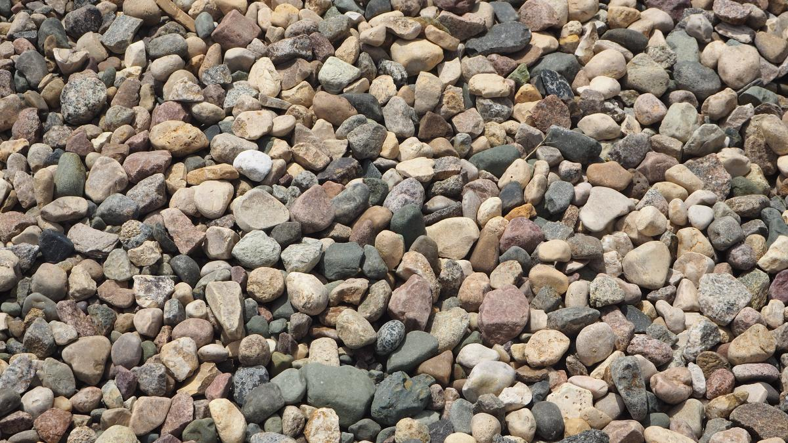
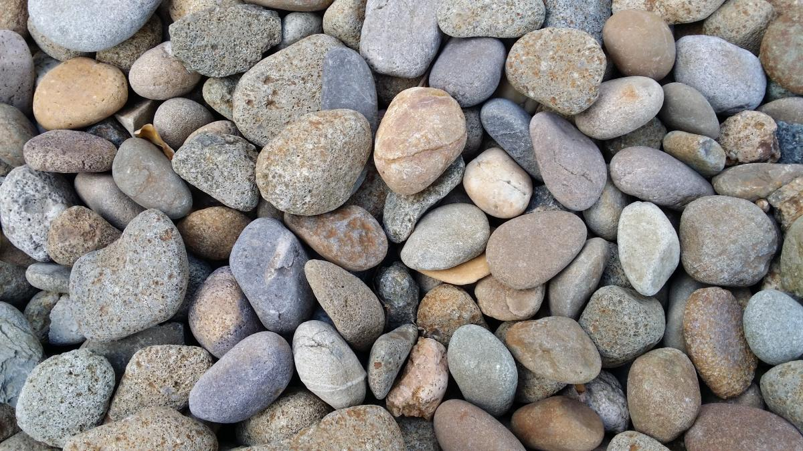
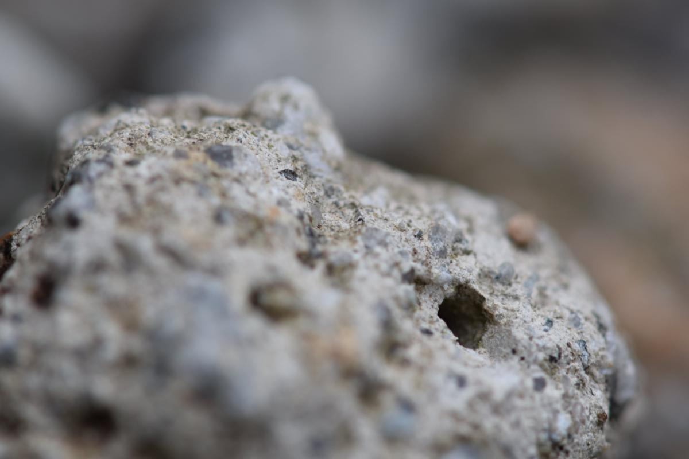

01
El ancho de entrada
Portón, reja, pilares. Un camión cargado no maniobra como una camioneta, y la entrada que «siempre ha alcanzado» a veces alcanza sólo vacío.
Villarrica · Región de La Araucanía
Por eso en áridos las dos preguntas que deciden todo no son «cuánto cuesta el metro»: son a qué distancia queda y si el camión puede entrar y botar. Esta página parte por ahí, que es donde se cae la mayoría de los pedidos.
01 — La pieza de esta página
Casi todo el mundo pide «ripio» o «arena» y recibe lo que haya. Pero cada material tiene una granulometría y un uso, y el equivocado se paga dos veces: una al comprarlo y otra al sacarlo de encima cuando no sirvió.
| El material | Para qué | Lo que conviene saber |
|---|---|---|
| Arena | Morteros, estucos, cama de asiento | No toda arena sirve para lo mismo: la muy fina y la que trae mucha arcilla no ligan igual. Al encargar conviene decir para qué es, no sólo cuánta. |
| Gravilla | Hormigones, radieres | El tamaño del árido tiene que caber entre los fierros. En una losa con enfierradura apretada, la gravilla grande deja huecos. |
| Ripio | Rellenos, bases, caminos | Es el más pedido y el peor definido: «ripio» significa cosas distintas en cada planta. Pregunte qué tamaños trae el que le van a mandar. |
| Estabilizado | Bases de camino y de radier, patios | Trae finos a propósito, para que compacte y quede firme. Es lo que se pide cuando hay que pisar encima, no cuando hay que drenar. |
| Bolón | Drenaje, pircas, enrocados, decoración | Piedra grande. Deja huecos por donde corre el agua, y por eso sirve donde el estabilizado sería justo lo contrario. |
| Maicillo | Senderos, patios, accesos livianos | Compacta y se ve prolijo, pero no aguanta tránsito pesado ni lluvia sin una base debajo. En el sur eso decide si dura una temporada o cinco. |
Esta tabla es conocimiento general del rubro, escrito por mí, y sirve igual para cualquier planta del país. No promete que Arimix produzca los seis materiales ni describe sus granulometrías: qué hay de verdad, con qué tamaños y a qué precio lo completa el negocio antes de publicar. En toda la página no hay ni una medida ni un precio, y es a propósito.

El metro cúbico cuesta lo mismo en todas partes.
Lo que cambia es cuántos kilómetros tiene encima.
02 — Antes de encargar
Es la parte que nadie revisa y la que hace volver un camión cargado. Un camión de áridos no reparte: llega, se estaciona y bota en un punto. Si ese punto no existe o no se puede llegar, el viaje se pierde igual.
01
Portón, reja, pilares. Un camión cargado no maniobra como una camioneta, y la entrada que «siempre ha alcanzado» a veces alcanza sólo vacío.
02
Cables, ramas y aleros. Una tolva levantada sube bastante más que el camión, y ése es el accidente clásico del rubro: se enganchó el cable del alumbrado.
03
O para salir en reversa hasta la calle. En un sitio cerrado sin vuelta, el chofer decide en la puerta si entra o no, y casi siempre decide que no.
04
Un solo montón, en el lugar exacto. Elegirlo bien ahorra el doble de trabajo después: cada metro que hay que mover a pala es tiempo, y muchas veces cuesta más que el material.
05
Pasto blando, tierra recién movida, una losa nueva, una tapa de cámara. Un camión cargado deja huella donde no hay que dejarla, y a veces se queda pegado.
06
El material llega en un punto y hay que llevarlo al lugar. Si eso lo va a hacer una persona con carretilla, conviene saberlo antes de pedir el camión más grande.
Ninguna de estas seis la resuelve el proveedor: las mira el cliente antes de encargar. Un vendedor que las pregunta por teléfono no está complicando el pedido — está evitando que el viaje se pierda.

De dónde sale
Del río. Redondeado por el agua, y por eso distinto al de una cantera.

03 — Cómo se pide
Y eso confunde a mucha gente. El árido mojado pesa más y ocupa lo mismo: por eso se vende por metro cúbico y no por kilo, y por eso una lluvia no cambia lo que usted recibe aunque cambie lo que marca la balanza.
Lo otro que conviene entender es que el camión tiene una capacidad y se cobra el viaje. Pedir de a poco sale más caro por metro que pedir completo, y pedir de más para «que sobre» también cuesta: el material que sobra hay que guardarlo o botarlo.
Lista de ejemplo de lo que suele ofrecer una planta de áridos. Qué produce Arimix, en qué tamaños, con qué camiones y hasta dónde despacha lo completa el negocio: está armada y vacía a propósito.
04 — El material



05 — Contacto
Con estas cuatro cosas se cotiza al tiro
Las seis líneas en cursiva son las que hay que llenar antes de publicar. «Hasta dónde despacha» es la que más consultas ahorra: media Villarrica y todo Licán Ray llaman para preguntar exactamente eso.
Para el dueño de Áridos Arimix
Por un lado las constructoras, que cotizan por escrito, comparan tres proveedores y necesitan datos: materiales, tamaños, capacidad de camión, radio de despacho.
Por otro, en Villarrica y Licán Ray, la persona que está haciendo una cabaña y no sabe si pedir ripio o estabilizado. Ése ni siquiera llama, porque no sabe qué preguntar. Una página que se lo explique convierte a la mitad de esa gente en cliente — y no le quita nada al primero.